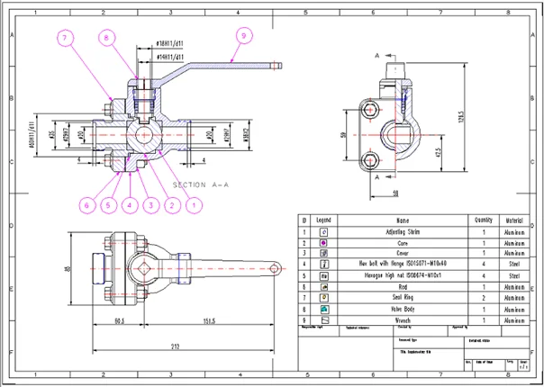
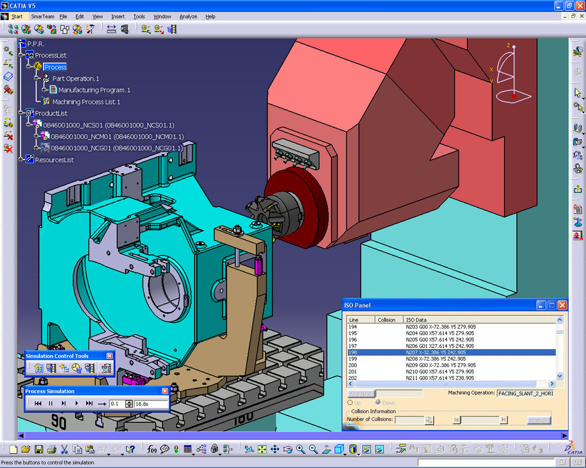
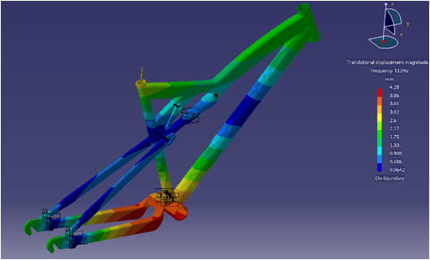

Projektowanie wspomagane komputerowo, które ma zastosowanie w inżynierii budowlanej, mechanicznej oraz elektrycznej. W mowie potocznej określeniem CAD powszechne jest określanie programu Autodesk AutoCad lub całego zbioru narzędzi CAD, CAM oraz CAE . Systemy CAD można podzielić na 2D, które są oprogramowaniem, które zastępuje deskę kreślarską oraz dużo bardziej zaawansowane systemy 3D, które pozwalają na modelowanie złożonych brył w przestrzeni.
Komputerowe wspomaganie wytwarzania. Oprogramowanie, którego zadaniem jest integracja systemów projektowania i wytwarzania. Zadaniem systemów CAM jest wygenerowania kodu maszynowego - G code - w oparciu o stworzone modele CAD, który po przesłaniu do maszyny obróbkowej (głównie obrabiarki sterowane numerycznie takie jak tokarki, frezarki, lasery itd.) umożliwi wytworzenie projektowanej części z elementu wsadowego stanowiącego półfabrykat.
Zastosowanie specjalistycznego oprogramowania komputerowego którego zadaniem jest wspomaganie pracy inżyniera w zakresie projektowania konstrukcji wraz z wykonaniem obliczeń wytrzymałościowych opartych o metodę elementów skończonych (MES) lub metodę elementów brzegowych (MEB) a także innych analiz technicznych.
| Skrót | Rozwinięcie |
|---|---|
| CAD | Computer Aided Design |
| CAM | Computer Aided Manufacturing |
| CAE | Computer Aided Engineering |
| MES | Metoda elementów skończonych |
| MEB | Metoda elementów brzegowych |
| CAD | CAM | CAE |
|  |  |  |